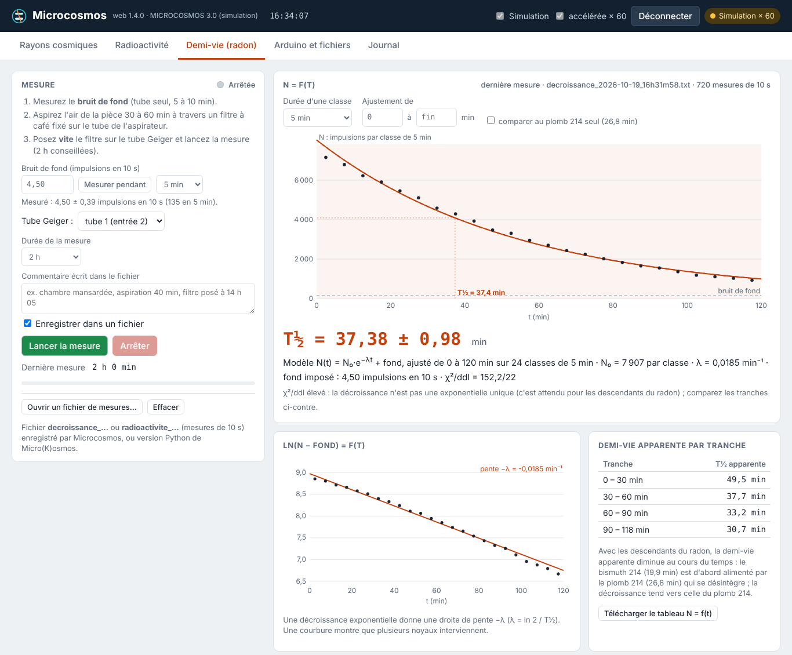
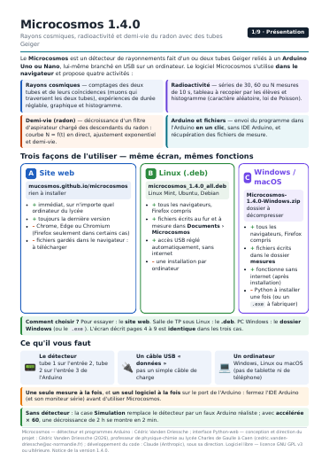
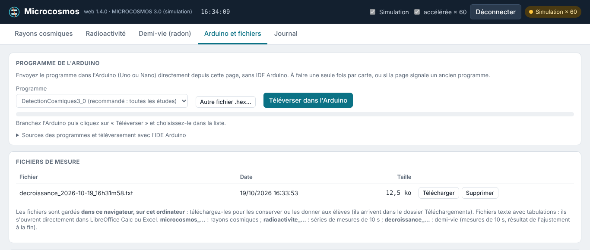
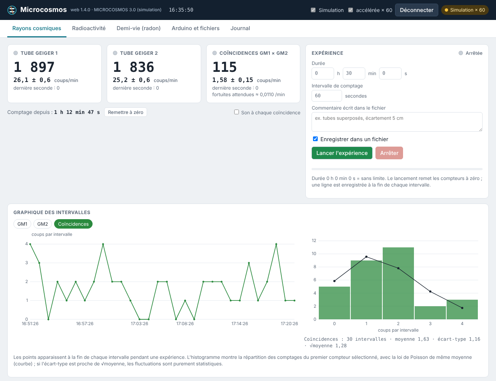
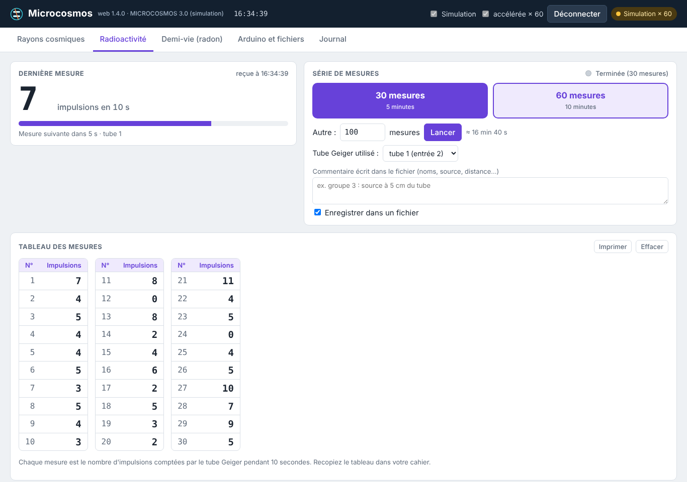

Un logiciel, trois activités
Microcosmos pilote le détecteur (1 ou 2 tubes Geiger reliés à un Arduino Uno ou Nano) depuis le navigateur. Les activités se choisissent par les onglets en haut de l’écran :
- Rayons cosmiques comptages des deux tubes et de leurs coïncidences, expériences de durée réglable, graphique et histogramme comparé à la loi de Poisson.
- Radioactivité séries de 30, 60 ou N mesures de 10 s, tableau à recopier par les élèves et histogramme.
- Demi-vie (radon) nouveau décroissance d’un filtre d’aspirateur : courbe N = f(t) en direct, ajustement exponentiel, T½ ± incertitude et demi-vies apparentes.
- Arduino et fichiers nouveau envoi du programme dans l’Arduino en un clic, sans IDE Arduino, et récupération des fichiers de mesure.
Un mode simulation (et « accélérée × 60 ») permet d’essayer sans détecteur : une mesure de demi-vie de 2 h se fait en 2 min.


Trois façons de l’utiliser
Le même écran et les mêmes fonctions dans les trois cas. Pour essayer : la version web. Salle de TP sous Linux : le paquet .deb. PC Windows ou Mac : le dossier à décompresser.
Version web
rien à installer
▶ Lancer Microcosmos- immédiat, sur n’importe quel ordinateur du lycée
- toujours la dernière version
- Chrome, Edge, Chromium, Opera ou Firefox 151 et plus récent (pas Safari, ni tablette ou téléphone)
- fichiers gardés dans le navigateur : à télécharger
Linux
Linux Mint, Ubuntu, Debian
⬇ microcosmos_1.4.0_all.deb (1,7 Mo)- tous les navigateurs, Firefox compris
- fichiers écrits au fur et à mesure dans
Documents/Microcosmos - accès USB réglé automatiquement, fonctionne sans internet
- une installation par ordinateur
Windows / macOS
dossier à décompresser
⬇ Microcosmos-1.4.0-Windows.zip (3,4 Mo)- tous les navigateurs, Firefox compris
- fichiers écrits dans le dossier
mesures - fonctionne sans internet
- Python à installer une fois (ou un
.exeà fabriquer)

Notice Microcosmos 1.4.0
Neuf pages illustrées : les trois installations, le téléversement du programme dans l’Arduino et le fonctionnement de chaque onglet.
Mise en route
1 · Installer
Web : rien à faire, cliquez sur « Lancer Microcosmos ».
Linux : double-clic sur le .deb, puis « Installer le paquet ». Microcosmos apparaît dans le menu (Éducation ou Sciences).
Windows / macOS : décompressez le dossier, installez Python une fois (python.org, case « Add python.exe to PATH »), puis double-clic sur lancer.bat.
2 · Programmer l’Arduino
Une seule fois par carte, sans IDE Arduino : onglet Arduino et fichiers, bouton Téléverser dans l’Arduino, puis choisir le port. L’écriture et la vérification prennent quelques secondes ; la page se connecte ensuite toute seule.
Uno et Nano, y compris « ancien bootloader ». Le programme DetectionCosmiques3_0 sert à toutes les études.
3 · Mesurer
Cliquez sur Connecter l’Arduino et choisissez son port (il apparaît en premier, sur fond bleuté). Choisissez l’onglet de l’activité.
Une seule mesure à la fois. Fermez l’IDE Arduino et son moniteur série avant d’utiliser Microcosmos. Pendant une mesure, gardez l’onglet ouvert et l’ordinateur hors veille.

Les onglets


Rayons cosmiques
- Trois cartes : total de chaque compteur et taux en coups/min avec son incertitude (± √N / t) ; la carte des coïncidences donne aussi les coïncidences fortuites attendues (R₁ × R₂ × 1 ms).
- Expérience : durée (0 = sans limite), intervalle de comptage, commentaire ; une ligne est écrite à la fin de chaque intervalle.
- Graphique des intervalles et histogramme comparé à la loi de Poisson.


Radioactivité
- 30 mesures (5 min), 60 mesures (10 min) ou un autre nombre ; chaque mesure dure exactement 10 s.
- Tableau en colonnes de 10, facile à recopier ; Imprimer n’imprime que le tableau.
- Histogramme : la moyenne et l’écart-type ne sont pas affichés, pour que les élèves les calculent ; ils figurent dans le fichier, pour le professeur.
Demi-vie (radon)
- Mesurer le bruit de fond (tube seul, 5 à 20 min).
- Aspirer l’air de la pièce 30 à 60 min à travers un filtre à café, poser le filtre sur le tube et lancer la mesure (2 h conseillées).
- La courbe N = f(t) se construit en direct (classes de 30 s à 10 min, barres d’erreur √N) ; T½ ± incertitude s’affiche sous la courbe.
- Le graphique ln(N − fond) et le tableau des demi-vies apparentes par tranche montrent l’effet de la filiation plomb 214 → bismuth 214.
On peut ouvrir un ancien fichier de mesures et exporter le tableau N = f(t) pour le tableur. Voir l’expérience complète sur la page Radioactivité.
Programmes Arduino
Le logiciel contient les deux programmes, en source (.ino) et compilés (.hex). On les envoie depuis l’onglet Arduino et fichiers ; les sources restent disponibles pour ceux qui préfèrent l’IDE Arduino.
Auteurs et licence
Détecteur et programmes Arduino : Cédric Vanden Driessche. Interface : conception et direction du projet Cédric Vanden Driessche (2026), professeur de physique-chimie au lycée Charles de Gaulle à Caen ; développement du code web : Claude (Anthropic), sous sa direction.
Logiciel libre sous licence GNU GPL, version 3 ou ultérieure, distribué sans aucune garantie.
Anciennes versions : paquet 1.2.0 · archive 1.2.0.